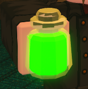

CLASSES
Fist Class

Orderly Path
Monk(Super)
Requirements to become a Monk:
- (1) - Lots of Fist XP (Fist XP is gotten by hitting Players or NPC Enemies with Fists.)
- (2) - Very little Orderly (3 Quests in Oresfall will be enough.)
- (3) - Requires Climb. (Can be made with basic climb.)
- (4) - [Location:] The Monk Trainer is at the top of the Southern Sanctuary.
- (5) - [Amount:] 4 Passives and 1 Active, 5 Total Skills.
- (6) - [Cost:] 40 Silver Per Skill.
Dragon Sage(Ultra)
Requirements to become a Dragon Sage:
- (1) - ...
- (2) - ...
- (3) - ...
- (4) - [Location:] ...
- (5) - [Amount:] ....
- (6) - [Cost:] ...
Chaotic Path
Akuma(Super)
Requirements to become an Akuma:
- (1) - Lots of Fist XP (Fist XP is gotten by hitting Players or NPC Enemies with Fists.)
- (2) - 30 - 50 Executions
- (3) - Have 12 seconds of climbing
- (4) - [Location:] The Akuma Trainer is Across from the the Necro house sitting over the void
- (5) - [Amount:] 3 Active and 1 Passive, 4 Total Skills.
- (6) - [Cost:] 60 Silver Per Skill.
Oni(Ultra)
Requirements to become an Oni:
- (1) - ...
- (2) - ...
- (3) - ...
- (4) - [Location:] ...
- (5) - [Amount:] ...
- (6) - [Cost:] ...
Sword Class
Orderly Path
Sigil Knight(Super)
Requirements to become a Sigil Knight:
- (1) - Requires All Warrior Training.
- (2) - Requires Lots of Orderly - Easiest way would be 11 tespians, ALL Orderly quests, and 2 shriekers.
- (3) - Requires Lots of Sword XP.
- (4) - Nearly max climb.
- (5) - [Location:] The Sigil Knight Trainer can be found at the top of Central Sanctuary.
- (6) - [Amount:] 3 Active.
- (7) - [Cost:] 65 Silver Per Skill.
Wraith Knight(Ultra)
Requirements to become a Wraith Knight:
- (1) - Requires max super sigil.
- (2) - Requires around 200 executions.
- (3) - [Location]: Sunken passage where you find an insane man sitting in a room alone, talk to him and find the girl in the jail cell under him, after meeting all requirements and talking to them, locate the Hall of Mirrors entrance and use the password to open the Hall. There you will find the Dark Sigil trainer.
- (4) - [Amount:] 2 Actives 1 Passive.
- (6) - [Cost:] 500 Silver Per Skill.
Chaotic Path
Great Sword(Super)
Requirements to become an Great Sword:
- (1) - Requires All Warrior Training
- (2) - 50 Executions
- (3) - Sword Required
- (4) - [Location:] The Greatsword Trainer is in the Glowscroom Cavern off the beaten path where there is seemingly a dead end. If you jump on the Stair case looking end there is a small hole to roll into.
- (5) - [Amount:] 1 active.
- (6) - [Cost:] 80 Silver.
Abyss Walker(Ultra)
Requirements to become an Abyss Walker:
- (1) - Requires maxed greatsword
- (2) - Quest : first speak to enibras in tundra once a max greatsword to get the quest to kill 2 high orderly classes. After that is done, return to him and he will give you a special flame on your torch. This torch must go from enibras to the necromancer church above the abyss near renova WITHOUT going out.
- (3) - Sword + Armour = 950 silver, Skills are free.
- (4) - Skills - Wrathful Leap : Dive into the air and deal a small amount of damage aswell as curing the enemy underneath (AoE)
- (5) - Abyssal Scream - Scream cursing everyone within a relatively large radius aswell as cursing yourself.
Dagger Class

Orderly Path
Spy(Super)
Requirements to become a Spy:
- (1) - Requires All Thief Training.
- (2) - Requires Lots of Orderly(15 zombies or 8 jails)
- (3) - Requires Dagger.
- (4) - Requires Decent Climb (About 8 Seconds)
- (5) - [Location:] The Spy Trainer is located in the Burial Grounds Tower in a hole in the wall just before the last turn to start up the latter.
- (6) - [Amount:] 2 Actives and 2 Passive, 4 Total Skills.
- (7) - [Cost:] 65 Silver Per Skill.
Whisperer(Ultra)
Requirements to become a Whisperer:
- (1) - Requires Max Spy.
- (2) - No ultra quest.
- (3) - [Location] Mother of Whisperers and Rorschach next to the Rapier in Castle Sanctuary.
- (4) - [Amount] 1 Free Choice from the Mother between: Wraith, Shadow, and Soul. 2 passives (Double Jump, and Rapier Training(allows you to buy rapier), 1 active Elegant Slash
- (5) - [Cost:] 500 per Rapier skill, the Mother skill is free.
Chaotic Path
Assassin(Super)
Requirements to become an Assassin:
- (1) - Requires All Thief Training.
- (2) - Requires 30 Executions.
- (3) - Requires Dagger.
- (4) - [Location:] The Assassin Trainer is in the Dungeon of Sentinel, in the farthest to the left cell.
- (5) - [Amount:] 3 Actives and 1 Passive, 4 Total Skills.
- (6) - [Cost:] 80 Silver Per Skill.
Faceless(Ultra)
Requirements to become a Faceless:
- (1) - ...
- (2) - ...
- (3) - ...
- (4) - [Location:] ...
- (5) - [Amount:] ...
- (6) - [Cost:] ...
Mage Class

Orderly Path
Illusionist(Super)
Requirements to become an Illusionist:
- (1) - Have max scholar class.
- (2) - Have high amount of order, around 35 jails.
- (3) - Go to mage hideout and talk to illusionist trainer
- (4) - [Location:] Mage Hideout
- (5) - [Amount:] ..
- (6) - [Cost:] ...
Illusionist(Ultra)
Requirements to become an Ultra Illusionist:
- (1) - Requires Max Super Illusionist.
- (2) - [Quest] Survive for 5 hours with every mental illness, doesn’t count if ur in Castle Sanctuary, disables Clear of Mind.
- (3) - Requires Climb. (Can be made with basic climb.)
- (4) - [Location:] ...
- (5) - [Amount:] 3 Actives, 1 Passive, 4 Total Skills.
- (6) - [Cost:] 500 silver per skill
Chaotic Path
Necromancer(Super)
Requirements to become a Necromancer:
- (1) - Have Chaotic Karma (30-40 grips)
- (2) - Get Mana and buy tome from Old Man.
- (3) - [Location:] ...
- (4) - [Amount:] 3 Active and 1 Passive, 4 Total Skills.
- (5) - [Cost:] 130 Silver Per lesson.
Necromancer(Ultra)
Requirements to become an Ultra Necromancer:
- (1) - Max Super Necromancer.
- (2) - Requires 50 bound shriekers.
- (4) - [Location:] In Tundra near the fire tree.
- (6) - [Cost:] ...
Spear Class

Orderly Path
Dragon Knight(Super)
Requirements to become a Dragon Knight:
- (1) - Requires all pitfighter skills and alot of spear exp, about 400 hits.
- (2) - Requires Spear.
- (3) - Requires Decent Orderly (6 tespians, 4 orderly quests)
- (4) - Requires 3 acorn lights - 1 for each move. (found in sunken passage)
- (5) - [Location:] The Dragon Knight Trainer is Located in Flower town, right in the front.
- (6) - [Amount:] 3 Actives.
- (7) - [Cost:] 100 Silver Per Skill.
Dragon Slayer(Ultra)
Requirements to become a Dragon Slayer:
- (1) - Requires max dragon knight super-class.
- (2) - Requires spear exp (alot)
- (3) - Requires for you to stay orderly (don't turn chaotic after dragon knight super)
- (4) - You have to kill the ice dragon.
- (5) - [Location:] New sky area there's a church go look for him.
- (6) - [Amount:] 2 moves, 1 awakening. [ONLY ULTRA WITH AN AWAKENING]
- (7) - [Cost:] Possibly 100 silver each
Chaotic Path
Church Knight(Super)
Requirements to become a Church Knight:
- (1) - Requires All Pitfighter Skills.
- (2) - Requires Spear.
- (3) - Requires 80 - 85 executions.
- (4) - [Location:] The Church Knight Trainer is Located in the Tundra in the sub-area Sanctum Spear Directly left of the Yeti.
- (5) - [Amount:] 2 Actives and 2 Passives, 4 Total Skills.
- (6) - [Cost:] 200 Silver Per Skill.
Deep Knight(Ultra)
Requirements to become a Deep Knight:
- (1) - ...
- (2) - ...
- (3) - ...)
- (4) - [Location:] ...
- (5) - [Amount:] ...
- (6) - [Cost:] ...
SUB-CLASSES
Bard(sub-class)
Bard
Requirements to get a Bard sub-class:
- (1) - Make sure you have not brought any other sub class upgrade.
- (2) - Earn 50 silver
- (3) - Go to wayside inn and talk to the Vinifera to buy a lute for 50 silver which will gives Vinifera's song.
Abilities
- (1) - Vinifera's song | Increase the health regen speed of nearby player.
- (2) - Symphony of horses ( old town road ) | Increase movement speed.
Alchemist

Alchemist
Requirements to get Alchemist sub-class:
- (1) - Ingredients.
- (2) - Make potions (25 per skills)
- (3) - Talk to the alchemist in emerald shore.
Abilities
- (1) - Eat Plant | Allow you to eat plants for hunger (50 Silver)
- (2) - Double Ingredients | Chance of getting double ingredients from 1 plant (100 Silver)
- (3) - Double Potion | Chance of making 2 potion at the same time (150 Silver)
- (4) - Toxicity Res | You get less toxicity from potion. Able to drink lords bane or kings bane(200 Silver)
Smither
Smither
Requirements to get Smither sub-class:
- (1) - Buy a pickaxe from the following location, Setinel, Oresfall, Emerald Shore for 5 silver.
- (2) - Start making weapons.
- (3) - (optional) Give your sword to a player or sell it at a vendor.
- (4) - After a amount of sword made, you can talk to Koris to upgrade your smith stage.
- Copper, Tin = Bronze Sword ( Sells for 10 silver )
- Copper, Iron, Mythril = Mythril Sword
Abilities
- (1) - Steel Alloy | Able to make Steel Sword (amount currently unknown)
- (2) - Mythril Alloy | Able to make Mythril Sword (Sells for 35 Silver)
Chef
Chef
Requirements to get Smither sub-class:
- (1) - Buy a pan from Setinel/Renova/Wayside Inn for 5 silver.
- (2) - Start cooking potatoes or meat.
- (3) - Talk to Soma for abilities after a lot of meats cooked.
- You can find potatoes in Alana
Abilities
- You can get cooking stuffs from food vendor:
- (1) - Seasoning from Quin (4 silver)
- (2) - Uncooked meat from meat vendor (3 silver)
- (3) - Spice from Yooni.
- (4) - Prepared poison from Vine.
- [Notes]: You can only buy uncooked meat if you own a pan.